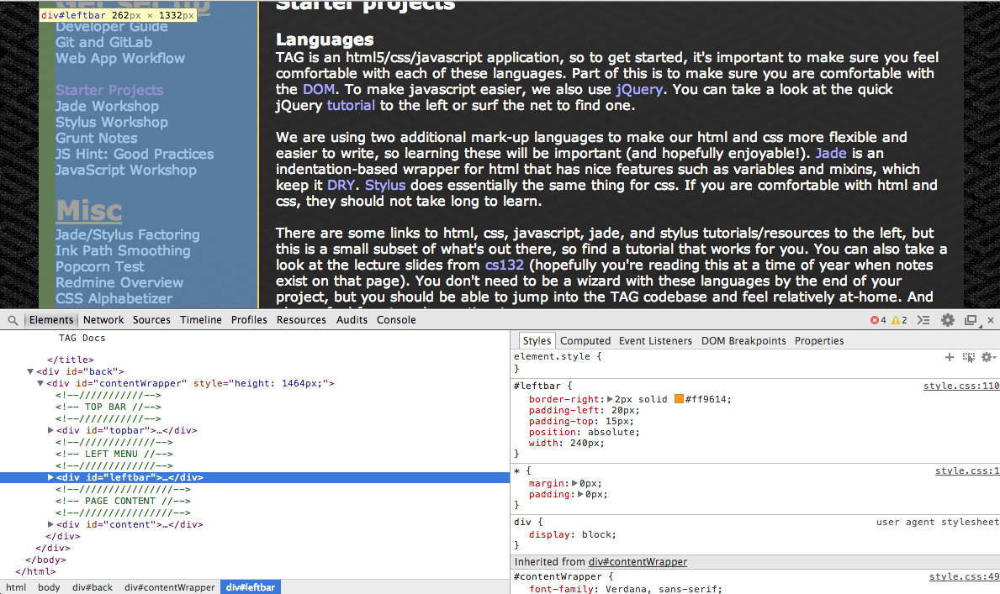
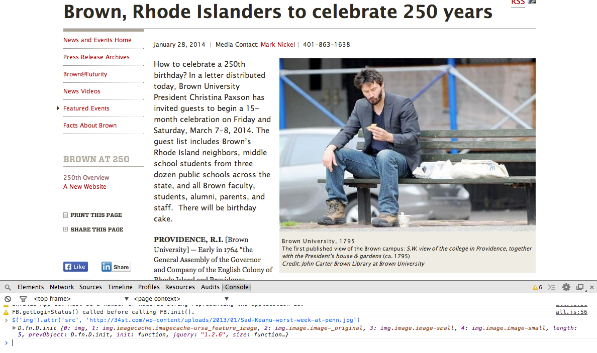
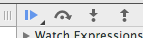

<!DOCTYPE html>
<html></html>
<head>
  <link rel="stylesheet" href="css/style.css">
  <script src="js/jquery.js"></script>
  <script src="js/raphael-min.js"></script>
  <script src="http://seadragon.com/ajax/0.8/seadragon-min.js"></script>
  <script src="https://google-code-prettify.googlecode.com/svn/loader/run_prettify.js?lang=css&amp;skin=sons-of-obsidian"></script>
  <script src="http://popcornjs.org/code/dist/popcorn-complete.min.js"></script>
  <script src="js/popcorn.capture.js"></script>
  <script src="js/alphacss.js"></script>
  <script src="js/poptest.js"></script>
  <script src="js/pathsmoothing.js"></script>
  <script src="js/tagdocs.js"></script>
  <title>
    TAG Docs
    
  </title>
</head>
<body>
  <div id="back">
    <div id="contentWrapper">
      <!--///////////-->
      <!-- TOP BAR //-->
      <!--///////////-->
      <div id="topbar"><span id="top-text"><a href="">TAG Docs</a></span><span id="top-subtext">A compendium of TAG-related materials</span></div>
      <!--/////////////-->
      <!-- LEFT MENU //-->
      <!--/////////////-->
      <div id="leftbar">
        <h1 class="linkhead">Get set up</h1>
        <ul>
          <li><a id="li-dev" onclick="openPage('dev')" class="pageanch page-tab">Developer Guide</a></li>
          <li><a id="li-github" onclick="openPage('github')" class="pageanch page-tab">Git and GitHub</a></li>
          <li><a id="li-webapp" onclick="openPage('webapp')" class="pageanch page-tab">Web App Workflow</a></li><br>
          <li><a id="li-starter" onclick="openPage('starter')" class="pageanch page-tab">Starter Projects</a></li>
          <li><a id="li-debugging" onclick="openPage('debugging')" class="pageanch page-tab">Debugging</a></li>
          <li><a id="li-testing" onclick="openPage('testing')" class="pageanch page-tab">Testing</a></li>
          <li><a id="li-jade-workshop" onclick="openPage('jade-workshop')" class="pageanch page-tab">Jade Workshop</a></li>
          <li><a id="li-stylus-workshop" onclick="openPage('stylus-workshop')" class="pageanch page-tab">Stylus Workshop</a></li>
          <li><a id="li-grunt" onclick="openPage('grunt')" class="pageanch page-tab">Grunt Notes</a></li>
          <li><a id="li-mamp" onclick="openPage('mamp')" class="pageanch page-tab">MAMP/WAMP</a></li>
          <li><a id="li-jshint-practices" onclick="openPage('jshint-practices')" class="pageanch page-tab">JS Hint: Good Practices</a></li>
          <li><a id="li-javascript-workshop" onclick="openPage('javascript-workshop')" class="pageanch page-tab">JavaScript Workshop</a></li>
        </ul><br>
        <h1 class="linkhead">Misc</h1>
        <ul>
          <li><a id="li-factoring" onclick="openPage('factoring')" class="pageanch page-tab">Jade/Stylus Factoring</a></li>
          <li><a id="li-pathsmoothing" onclick="openPage('pathsmoothing')" class="pageanch page-tab">Ink Path Smoothing</a></li>
          <li><a id="li-popcorn" onclick="openPage('popcorn')" class="pageanch page-tab">Popcorn Test</a></li>
          <li><a id="li-redmine" onclick="openPage('redmine')" class="pageanch page-tab">Redmine Overview</a></li>
          <li><a id="li-alphacss" onclick="openPage('alphacss')" class="pageanch page-tab">CSS Alphabetizer</a></li>
          <li><a id="li-seadragonTest" onclick="openPage('seadragonTest')" class="pageanch page-tab">Seadragon Viewers</a></li>
        </ul><br>
        <h1 class="linkhead">Links</h1>
        <h2 class="linklist">Web app links</h2>
        <ul>
          <li class="linklistitem"><a href="https://developer.mozilla.org/en-US/docs/Web/Guide/CSS/Getting_started" target="_blank" class="link">MDN CSS tutorial</a></li>
          <li class="linklistitem"><a href="http://www.w3schools.com/html/default.asp" target="_blank" class="link">W3Schools HTML tutorial</a></li>
          <li class="linklistitem"><a href="https://developer.mozilla.org/en-US/learn/html" target="_blank" class="link">MDN HTML resources</a></li>
          <li class="linklistitem"><a href="https://developer.mozilla.org/en-US/docs/DOM/DOM_Reference/Introduction" target="_blank" class="link">The DOM</a></li>
          <li class="linklistitem"><a href="http://learnboost.github.io/stylus/" target="_blank" class="link">Stylus Docs</a></li>
          <li class="linklistitem"><a href="http://jade-lang.com/api/" target="_blank" class="link">Jade home and API guide</a></li>
          <li class="linklistitem"><a href="http://naltatis.github.io/jade-syntax-docs/#basics" target="_blank" class="link">Jade documentation</a></li>
          <li class="linklistitem"><a href="http://cssdeck.com/labs/learning-the-jade-templating-engine-syntax" target="_blank" class="link">Jade tutorial</a></li>
          <li class="linklistitem"><a href="http://html5test.com/compare/feature/index.html" target="_blank" class="link">HTML5 browser support</a></li>
          <li class="linklistitem"><a href="http://necolas.github.io/normalize.css/" target="_blank" class="link">normalize.css</a></li>
          <li class="linklistitem"><a href="https://github.com/bower/bower" target="_blank" class="link">Bower pkg management</a></li>
          <li class="linklistitem"><a href="http://gruntjs.com/" target="_blank" class="link">Grunt</a></li>
        </ul><br>
        <h2 class="linklist">JS Fiddle Demos</h2>
        <ul>
          <li class="linklistitem"><a href="http://jsfiddle.net/bleveque/EXuu5/" target="_blank" class="link">Scope</a></li>
          <li class="linklistitem"><a href="http://jsfiddle.net/bleveque/5TAJg/" target="_blank" class="link">Scope and Closures</a></li>
          <li class="linklistitem"><a href="http://jsfiddle.net/bleveque/QSv2J/" target="_blank" class="link">Pseudoclassical Inheritance</a></li>
        </ul><br>
        <h2 class="linklist">Tools</h2>
        <ul>
          <li class="linklistitem"><a href="http://jsfiddle.net/" target="_blank" class="link">JSFiddle</a></li>
          <li class="linklistitem"><a href="http://www.jslint.com/" target="_blank" class="link">JSLint</a></li>
          <li class="linklistitem"><a href="http://www.dirtymarkup.com/" target="_blank" class="link">Dirty Markup</a></li>
          <li class="linklistitem"><a href="http://jsperf.com/" target="_blank" class="link">JSPerf</a></li>
          <li class="linklistitem"><a href="http://tagissuetracker.cs.brown.edu:3000/" target="_blank" class="link">TAG issue tracker</a></li>
          <li class="linklistitem"><a href="http://www.oldversion.com/" target="_blank" class="link">Old browser versions</a></li>
          <li class="linklistitem"><a href="http://modern.ie/en-us" target="_blank" class="link">Old IE versions</a></li>
        </ul><br>
        <h2 class="linklist">Stuff.js</h2>
        <ul>
          <li class="linklistitem"><a href="https://developer.mozilla.org/en-US/docs/Web/API/window.requestAnimationFrame" target="_blank" class="link">Request Anim Frame</a></li>
          <li class="linklistitem"><a href="https://developer.mozilla.org/en-US/docs/Web/API/document.createDocumentFragment" target="_blank" class="link">Document fragments</a></li>
          <li class="linklistitem"><a href="http://api.jquery.com/jQuery.ajax/" target="_blank" class="link">JQuery.ajax()</a></li>
        </ul><br>
        <h2 class="linklist">CSS tips</h2>
        <ul>
          <li class="linklistitem"><a href="http://www.w3schools.com/cssref/tryit.asp?filename=trycss3_text-overflow_hover" target="_blank" class="link">Text overflow</a></li>
          <li class="linklistitem"><a href="http://css-tricks.com/box-sizing/" target="_blank" class="link">Box sizing</a></li>
          <li class="linklistitem"><a href="http://vaughnroyko.com/the-real-scoop-on-jquery-find-performance/" target="_blank" class="link">Selectors and .find</a></li>
        </ul><br>
        <h2 class="linklist">Jade examples</h2>
        <ul>
          <li class="linklistitem"><a href="./jade_examples/ardra/myweb.html" target="_blank" class="link">Ex. 1</a></li>
          <li class="linklistitem"><a href="./jade_examples/libby/index.html" target="_blank" class="link">Ex. 2</a></li>
        </ul><br>
      </div>
      <!--////////////////-->
      <!-- PAGE CONTENT //-->
      <!--////////////////-->
      <div id="content">
        <!--////////////////-->
        <!-- WELCOME PAGE //-->
        <!--////////////////-->
        <div id="welcome" class="page">
          <h2>Welcome!</h2><br>Welcome to the Touch Art Gallery Docs, a list of TAG-related material and references.<br><br>If you are a developer getting ready to start working on TAG, take a look at the
          "Get set up" pages to the left.<br><br><br><br><br><br>Below are some outside links.<br><br>Filter
          <select id="linkFilter">
            <option>All</option>
            <option>HTML</option>
            <option>CSS</option>
            <option>JS</option>
            <option>Workflow</option>
          </select><br><br><a href="http://jsfiddle.net/" tags="HTML, CSS, JS" class="resource">
            <div class="resourceTitleContainer">
              <div class="resourceTitleInnerContainer">
                <div class="resourceTitle">JS Fiddle</div>
              </div>
            </div>
            <div class="resourceDescriptionContainer">
              <div class="resourceDescriptionInnerContainer">
                <div class="resourceDescription">Javascript sandbox for playing around with js, css, and html.</div>
              </div>
            </div></a><a href="http://gruntjs.com/" tags="Workflow" class="resource">
            <div class="resourceTitleContainer">
              <div class="resourceTitleInnerContainer">
                <div class="resourceTitle">Grunt</div>
              </div>
            </div>
            <div class="resourceDescriptionContainer">
              <div class="resourceDescriptionInnerContainer">
                <div class="resourceDescription">Homepage for the Grunt task runner. Part of the Node.js platform, makes writing Jade and Stylus more enjoyable.</div>
              </div>
            </div></a><a href="http://necolas.github.io/normalize.css/" tags="CSS" class="resource">
            <div class="resourceTitleContainer">
              <div class="resourceTitleInnerContainer">
                <div class="resourceTitle">normalize.css</div>
              </div>
            </div>
            <div class="resourceDescriptionContainer">
              <div class="resourceDescriptionInnerContainer">
                <div class="resourceDescription">CSS file aiming to provide cross-browser compatibility. Something worth looking into at some point.</div>
              </div>
            </div></a><a href="http://html5test.com/compare/feature/index.html" tags="HTML" class="resource">
            <div class="resourceTitleContainer">
              <div class="resourceTitleInnerContainer">
                <div class="resourceTitle">HTML5 browser support</div>
              </div>
            </div>
            <div class="resourceDescriptionContainer">
              <div class="resourceDescriptionInnerContainer">
                <div class="resourceDescription">See which browsers support various html5 features.</div>
              </div>
            </div></a><a href="http://naltatis.github.io/jade-syntax-docs/#basics" tags="Jade" class="resource">
            <div class="resourceTitleContainer">
              <div class="resourceTitleInnerContainer">
                <div class="resourceTitle">Interactive Jade tutorial</div>
              </div>
            </div>
            <div class="resourceDescriptionContainer">
              <div class="resourceDescriptionInnerContainer">
                <div class="resourceDescription">Could be a good way to pick up jade.</div>
              </div>
            </div></a><a href="http://jade-lang.com/reference/" tags="Jade" class="resource">
            <div class="resourceTitleContainer">
              <div class="resourceTitleInnerContainer">
                <div class="resourceTitle">Jade documentation</div>
              </div>
            </div>
            <div class="resourceDescriptionContainer">
              <div class="resourceDescriptionInnerContainer">
                <div class="resourceDescription">Official jade documentation. The language reference is a good jade syntax resource. The API tab could be useful if we end up using the jade API.</div>
              </div>
            </div></a><a href="http://learnboost.github.io/stylus/" tags="Stylus" class="resource">
            <div class="resourceTitleContainer">
              <div class="resourceTitleInnerContainer">
                <div class="resourceTitle">Stylus documentation</div>
              </div>
            </div>
            <div class="resourceDescriptionContainer">
              <div class="resourceDescriptionInnerContainer">
                <div class="resourceDescription">Official stylus documentation.</div>
              </div>
            </div></a><a href="https://developer.mozilla.org/en-US/docs/DOM/DOM_Reference/Introduction" tags="HTML, CSS, JS" class="resource">
            <div class="resourceTitleContainer">
              <div class="resourceTitleInnerContainer">
                <div class="resourceTitle">The DOM</div>
              </div>
            </div>
            <div class="resourceDescriptionContainer">
              <div class="resourceDescriptionInnerContainer">
                <div class="resourceDescription">A refresher on (or introduction to) the Document Object Model</div>
              </div>
            </div></a><a href="https://developer.mozilla.org/en-US/learn/html" tags="HTML" class="resource">
            <div class="resourceTitleContainer">
              <div class="resourceTitleInnerContainer">
                <div class="resourceTitle">MDN HTML resources</div>
              </div>
            </div>
            <div class="resourceDescriptionContainer">
              <div class="resourceDescriptionInnerContainer">
                <div class="resourceDescription">Resources for learning or brushing up on HTML. Compiled by the Mozilla Developer Network</div>
              </div>
            </div></a><a href="http://www.w3schools.com/html/default.asp" tags="HTML" class="resource">
            <div class="resourceTitleContainer">
              <div class="resourceTitleInnerContainer">
                <div class="resourceTitle">W3Schools HTML tutorial</div>
              </div>
            </div>
            <div class="resourceDescriptionContainer">
              <div class="resourceDescriptionInnerContainer">
                <div class="resourceDescription">Has tutorials for vanilla html as well as what is new in html5.</div>
              </div>
            </div></a><a href="https://developer.mozilla.org/en-US/docs/Web/Guide/CSS/Getting_started" tags="CSS" class="resource">
            <div class="resourceTitleContainer">
              <div class="resourceTitleInnerContainer">
                <div class="resourceTitle">MDN CSS tutorial</div>
              </div>
            </div>
            <div class="resourceDescriptionContainer">
              <div class="resourceDescriptionInnerContainer">
                <div class="resourceDescription">An introduction to cascading style sheets by the Mozilla Developer Network.</div>
              </div>
            </div></a><a href="https://developers.google.com/speed/docs/best-practices/rendering" tags="CSS, HTML" class="resource">
            <div class="resourceTitleContainer">
              <div class="resourceTitleInnerContainer">
                <div class="resourceTitle">Optimizing browser rendering</div>
              </div>
            </div>
            <div class="resourceDescriptionContainer">
              <div class="resourceDescriptionInnerContainer">
                <div class="resourceDescription">Some helpful tips for optimizing browser rendering times, including what kind of css selectors to use.</div>
              </div>
            </div></a><br><br>
        </div>
        <!--///////////////////-->
        <!-- DEVELOPER GUIDE //-->
        <!--///////////////////-->
        <div id="dev" class="page">
          <h2>Developer guide</h2><br>This page will cover how to get started developing for
          the web app, the Windows 8 app, and the server.<br><br>
          <h3>Web app</h3>In the web app, we're using&nbsp;<a href="http://en.wikipedia.org/wiki/Git_(software)">Git</a>&nbsp;for version control, and our code is hosted on GitHub, so
          the first step for web app development is to get set up with Git.
          Check out the&nbsp;<a id="plink-github" class="plink">Git and GitHub</a>&nbsp;page to the left.<br><br>Now that Git is set up, you'll need to install some Node.js modules, which
          requires first installing&nbsp;<a href="http://nodejs.org/">Node.js</a>. As mentioned on its website, Node is a platform that provides lots of
          utilities that facilitate web app creation. We're using a small subset of Node's
          functionality. In particular, we use&nbsp;<a href="http://jade-lang.com/">Jade</a>&nbsp;(for writing cleaner and more flexible
          html),&nbsp;<a href="http://learnboost.github.io/stylus/">Stylus</a>&nbsp;(analogous to Jade, but for css), and&nbsp;<a href="http://gruntjs.com/">Grunt</a>&nbsp;(for automating a lot of tedious things like compiling Jade and Stylus files).<br><br>If you are not already
          familiar with Jade and Stylus, you can take a look at the workshops to the left or
          at other online documentation and tutorials (under the 'Web app links' heading to the left).<br><br>To install Jade, Stylus, Grunt, and any other Node modules we happen to be using,
          navigate to the directory containing your clone of the TAG repository. You will first
          want to install the grunt command line interface using&nbsp;<span>$ npm install -g grunt-cli</span>. This lets you run the grunt command from your terminal. If it complains about permissions,
          you may need to run the install command as administrator on Windows or using sudo on Macs.
          After grunt-cli is installed, you can run &nbsp;<span>$ npm install</span>. There is a file called package.json in the top-level TAG directory that tells npm which
          modules to install, so you should now have everything you need. Again, you might need to
          run this as admin/root.<br><br>To get accustomed to the structure of and normal workflow for the web app, take a look at the&nbsp;<a id="plink-webapp" class="plink">relevant page</a>&nbsp;to the left.<br><br>
          <h3>Windows 8 app</h3>Stay tuned! Let the team lead know if you need this information now...<br><br>
          <h3>Server development</h3>Jess Fu put together&nbsp;<a href="ServerDocs/GettingStarted.txt" target="_blank">some notes</a>&nbsp;on getting set up for server development.<br><br>
        </div>
        <!--/////////////////////////-->
        <!-- JADE/STYLUS FACTORING //-->
        <!--/////////////////////////-->
        <div id="factoring" class="page">
          <h2>Factoring JS files into Jade and Stylus</h2>A few notes on factoring<br><br>
          <h3>Create the files</h3>You'll just need to create one .jade and one .styl file. The .jade file will go in
          the LADS/html directory, and the .styl file will go in the LADS/css directory. For
          example, if you are factoring LADS.Layout.StartPage.js, you might consider creating
          LADS/html/StartPage.jade and LADS/css/StartPage.css.<br><br>
          <h3>Update the Gruntfile</h3>To make sure grunt knows how to compile your files (see the webapp workflow page for
          more information on grunt), go ahead and add the two files you just created to
          Gruntfile.js (following the example of files already included in the Gruntfile). You'll
          notice that the next time you run 'grunt', more files are being automatically compiled.<br><br>
          <h3>Update stylesheets</h3>In default.html, you'll need to add a link tag for your new stylesheet (e.g.,
          css/StartPage.css).<br><br>
          <h3>Factor philosophy</h3>Unless it really makes sense for a particular html element to be created dynamically,
          it should go into your .jade file. For example, the img tag containing the Brown logo
          on the splash screen should be in the .jade file, but if you have a button whose click
          handler creates a popup, it's probably okay if that popup is created on the fly. So for
          each call to document.createElement, you'll have to decide whether that element could
          have been 'created' in the .jade file rather than via javascript.
          In terms of styling, the initial styling rules for every element in the page
          should go in your .styl file (even if this element is created dynamically! it still has
          a class or an id). If you see someJqueryObject.css({...}), slash it and put those
          rules in your stylesheet. The exception is if the call to .css is in some sort of handler
          that changes the existing style rules for the element...<br><br>
          <h3>The root</h3>Since we're no longer creating the root of a page by calling document.createElement, we
          need to load in the root element of our html file instead. You can do this using the
          LADS.Util.getHtmlAjax function, which takes in the name of the html file to load. You can
          then access any children of the root (e.g., an element with id 'tagunicorn') by calling
          root.find('#tagunicorn').<br><br>
          <h3>Conflicting CSS</h3>Since we're creating link tags for each stylsheet, there are bound to be some overlapping
          ids and classes that will screw with our styling. There's probably a good way to
          dynamically change the source of a link tag, but until then, we can avoid conflicts by
          starting each stylus rule with the id of the root of that page. This forces CSS to look
          at all children of the root for the given id or class, so it'll never match an #overlay
          on the collections page to an #overlay style rule on the splash screen.
        </div>
        <!--///////////////////////////-->
        <!-- GENERAL WEBAPP WORKFLOW //-->
        <!--///////////////////////////-->
        <div id="webapp" class="page">
          <h2>Web app structure and workflow</h2>A general overview of working with the web app. Also, some coding conventions.<br><br>
          <h3>Structure of the web app</h3>Take a look at the top-level directory of your TAG clone. There's a directory called
          LADS, which has basically all of our code, and there are a couple files called
          package.json and Gruntfile.js. As mentioned in the&nbsp;<a id="plink-dev" class="plink">developer guide</a>, package.json contains a list of TAG's Node.js dependencies, so running&nbsp;<span>$ npm install</span>&nbsp;in the top-level directory will install the appropriate Node modules. The Gruntfile
          contains instructions for 'building' the web app, in some sense. Take a look&nbsp;<a id="plink-grunt" class="plink">here</a>&nbsp;for more information.<br><br>In the LADS directory, the main attractions are the html, css, and js subdirectories.
          The first two are pretty self-explanatory, but to find relevant javascript files is
          slightly more difficult. Most javascript files related to kiosk mode (the TAG interface
          that a museum visitor would see) are in js/LADS/layout. For example, the collections view
          page's js file is js/LADS/layout/LADS.Layout.NewCatalog.js. Another important file is
          js/LADS/util/LADS.Util.js, which has a lot of general utility funtions (used by multiple
          other files).<br><br><br>
          <h3>Workflow</h3>The basic workflow is to first pull down the latest changes from GitHub (<span>git pull</span>&nbsp;-- if you have local changes, though, you will need to run&nbsp;<span>git commit -am "commit message"</span>&nbsp; or&nbsp;<span>git stash</span>&nbsp; before pulling; see the&nbsp;<a id="plink-github" class="plink">GitHub page</a>&nbsp; for more information). Then you can set&nbsp;<span>grunt watch</span>&nbsp;running to watch for any changes. You can then edit away. Commit and pull often
          to make sure your code is well-synced with what is in GitHub.<br><br><br>
          <h3>CONVENTIONS</h3>Let's try to create a sane codebase. Our current codebase is insane, and this is our
          chance to fix it. So let's adopt some simple conventions:
          <ol>
            <li>Alphabetize your stylus rules.</li>
            <li>Put common mixins and variables in common.styl.</li>
            <li>
              Mark code that should be completed or cleaned later with a big
              'TODO' in a comment
              so it's easy to search for later.
            </li>
            <li>
              Mark style rules with dubious cross-browser compatibility with 'CBC?'
              so they are easy to search for.
            </li>
          </ol>
        </div>
        <!--////////////////////-->
        <!-- STARTER PROJECTS //-->
        <!--////////////////////-->
        <div id="starter" class="page">
          <h2>Starter projects</h2><br>
          <h3>Languages</h3>TAG is an html5/css/javascript application, so to get started, it's important to make sure
          you feel comfortable with each of these languages. Part of this is to make sure you are comfortable
          with the&nbsp;<a href="https://developer.mozilla.org/en-US/docs/DOM/DOM_Reference/Introduction" target="_blank">DOM</a>. To make javascript easier, we also use&nbsp;<a href="http://api.jquery.com/" target="_blank">jQuery</a>. You can take a look at the quick jQuery&nbsp;<a id="plink-jquery" class="plink">tutorial</a>&nbsp;to the left or surf the net to find one.<br><br>
          <div class="thumbnailContainer">
            <div class="innerTableContainer"><a href="https://developer.mozilla.org/en-US/learn/html" target="_blank"></a></div>
            <div class="innerTableContainer"><a href="https://developer.mozilla.org/en-US/docs/Web/Guide/CSS/Getting_started" target="_blank"></a></div>
            <div class="innerTableContainer"><a href="https://developer.mozilla.org/en-US/docs/Web/JavaScript" target="_blank"></a></div>
            <div class="innerTableContainer"><a href="http://jquery.com/" target="_blank"></a></div>
            <div class="innerTableContainer"><a href="http://jade-lang.com/api/" target="_blank"></a></div>
            <div class="innerTableContainer"><a href="http://learnboost.github.io/stylus/" target="_blank"></a></div>
          </div><br><br>We are using two additional mark-up languages to make our html and css more flexible and easier
          to write, so learning these will be important (and hopefully enjoyable!).&nbsp;<a href="http://jade-lang.com/api/" target="_blank">Jade</a>&nbsp;is an indentation-based wrapper for html that has nice features such as variables and
          mixins, which keep it&nbsp;<a href="http://en.wikipedia.org/wiki/Don't_repeat_yourself" target="_blank">DRY</a>.&nbsp;<a href="http://learnboost.github.io/stylus/" target="_blank">Stylus</a>&nbsp;does essentially the same thing for css. If you are comfortable with html and css, they
          should not take long to learn.<br><br>There are some links to html, css, javascript, jade, and stylus tutorials/resources to the left,
          but this is a small subset of what's out there, so find a tutorial that works for you. You can
          also take a look at the lecture slides from&nbsp;<a href="http://cs.brown.edu/courses/cs132/lectures.html" target="_blank">cs132</a>&nbsp;(hopefully you're reading this at a time of year when notes exist on that page). You don't
          need to be a wizard with these languages by the end of your project, but you should be able
          to jump into the TAG codebase and feel relatively at-home. And always feel free to ask questions!
          It might be helpful to take a look at the page on&nbsp;<a id="plink-debugging" class="plink">debugging</a>.<br><br><br>
          <h3>Getting set up with Jade and Stylus for a starter project</h3>The first thing you'll want to do is&nbsp;<a href="http://nodejs.org/" target="_blank">install node.js</a>. Jade and Stylus both fall under the node.js platform, so there are nice node utilities
          for working with them. Next, you can run&nbsp;<span>$ npm install -g grunt-cli</span>&nbsp; from the command prompt or terminal (it may ask for administrative permissions, so
          you might need to use an administrator command prompt on Windows or run using sudo on Macs).
          This will let you run a handy tool called&nbsp;<a id="plink-grunt" class="plink">Grunt</a>&nbsp;from the command line, which will take care of compiling jade and stylus for you.<br><br>There's a basic starter project template&nbsp;<a href="starter.zip">here</a>. Go ahead and download and unzip it. Navigate to the directory. You'll see that it contains
          a .jade file, a .styl file, a package.json file, and a Gruntfile.js file. The package.json 
          file tells node which node packages should be installed for this project (in this case, jade,
          stylus, and a couple utilities). Running&nbsp;<span>$ npm install</span>&nbsp;should give you all the necessary packages. Again, you might need admin permissions.
          The Gruntfile has instructions for how to compile your jade
          and stylus files. Running&nbsp;<span>$ grunt</span>&nbsp;should now compile .html and .css files from your .jade and .styl files. It is the html
          and css files that the browser will use to render your page, so every time you make changes to
          your jade and styl sources, you should recompile. Fortunately, there is a grunt tool for making
          this less tedious. If you run&nbsp;<span>$ grunt watch</span>, grunt will wait for any changes in your files and compile when necessary.<br><br>
          <h3>Project options</h3>Email the team lead for the current menu of starter project options.<br><br><br>
        </div>
        <!--/////////////-->
        <!-- DEBUGGING //-->
        <!--/////////////-->
        <div id="debugging" class="page">
          <h2>Debugging</h2><br>
          <h3>Using the inspector</h3>Knowing how to debug in javascript is very helpful. The main tool at your disposal is the
          inspector, which lets you explore the DOM, add breakpoints, and monitor network activity
          generated by your site. Opening the inspector is slightly different on each browser (as is the
          functionality provided), but usually right-clicking on the page and selecting something
          sounding like "Inspect Element" will do it. We'll just talk about the Chrome inspector here,
          but it's basically the same on most browsers.<br><br>Clicking on the "Elements" tab in the inspector will show a collapsable representation of the DOM.
          If you hover over an element, it will be highlighted in the page itself (with its width and height
          displayed), and its margin and padding will be shown in a different color. Clicking on the element,
          you can see more information about it in the right pane of the inspector (e.g., style rules, event
          handlers, etc...). If you want to experiment with the styling of the page, you can change any
          of the rules or add new ones. Likewise, you can edit attributes of html elements. Here's an example:<br><br><a href="images/inspectorElements.png" target="_blank"></a><br><br>Clicking on the "Sources" tab will let you open up a source file related to the page, such
          as a javascript or css file. If you click on a number next to a line in a javascript file, a
          breakpoint will be added at that line. The breakpoint will survive page refreshes. Again, the
          right pane has a bunch of information about the file you're looking at.<br><br>Clicking on the "Console" tab will open a javascript console. Any errors in your js files will
          be printed here, and if you want to add print lines to your code, you can use&nbsp;<span>console.log('hey hey hey!');</span>. Also, you can type out arbitrary javascript in the console. For example, if you want to check
          if javascript strings have a&nbsp;<span>length</span>&nbsp;property, you can type out something like<br><br>
          <pre class="prettyprint">var a = 'the quick brown fox is overrated'
a.length</pre><br>If you want to do something more interesting, you can use the console to manipulate elements in
          the DOM. For example, you can make Keanu Reeves celebrate (or not) Brown's upcoming 250th
          birthday:<br><br><a href="images/keanuBrown.png" target="_blank"></a><br><br>The console can be especially helpful in conjunction with breakpoints...<br><br>
          <h3>Breakpoints</h3>There are two ways to set breakpoints. One, as mentioned above, is to use the "Sources" tab
          in the inspector directly. The other is to insert a line in your code:<br><br>
          <pre class="prettyprint">var a = 5;
debugger;
// some code below</pre><br>If the inspector is open when this code runs, you will hit a breakpoint here. The
          console will have access to all variables that are in scope at this point in the code,
          so if you went to the console and typed "a+1", you would get 6. It's time well spent to
          play around with this kind of stuff.<br><br>
          <h3>Stepping through</h3>When you're at a breakpoint, you can use the buttons that look like:<br><br><a href="images/breakpointButtons.png" target="_blank"></a><br><br>to step through your code.<br><br><br>
        </div>
        <!--///////////-->
        <!-- TESTING //-->
        <!--///////////-->
        <div id="testing" class="page">
          <h2>Testing TAG</h2><br>Jess Herron put together a&nbsp;<a href="testing.pdf">very helpful document</a>&nbsp;on testing. Check it out!<br><br><br>
        </div>
        <!--///////////////-->
        <!-- GRUNT NOTES //-->
        <!--///////////////-->
        <div id="grunt" class="page">
          <h2>Grunt notes</h2><br>
          <h3>Uses of Grunt</h3><a href="http://gruntjs.com/">Grunt</a>&nbsp; is useful for automating the compilation of Jade and Stylus files (into
          html and css files), but it is also useful for concatenating and minifying
          javascript files. We are currently using Grunt to perform the following tasks
          (accordingly, always run the grunt command after editing code):<br><br>
          <ol>
            <li>Compiling all jade files in the LADS/html directory into corresponding html files</li>
            <li>Compiling stylus files in LADS/css into LADS/css/TAG.css (nice to have only one css file to include)</li>
            <li>Concatenating javascript files into LADS/TAG.js (so users only need to include one js file)</li>
            <li>When we ship, we'll run &nbsp;<span>$ grunt uglify</span>&nbsp;, which minifies TAG.js into TAG-min.js. Minificaiton is done by replacing variable names
              with mostly one-letter names and removing most whitespace. The resulting file is much
              smaller, which is better for performance.
            </li>
          </ol><br><br>
          <h3>Running Grunt</h3>There are three basic ways of using Grunt:<br><br>
          <ol>
            <li>Running&nbsp;<span>$ grunt</span>&nbsp;runs the default Grunt tasks (as listed in the Gruntfile -- see below) once.</li>
            <li>Running &nbsp;<span>$ grunt watch</span>&nbsp;creates a job that watches for any saves in the files listed in the Gruntfile. For
              example, if you run&nbsp;<span>grunt watch</span>&nbsp;and then save a Jade file, grunt will be run once, and the
              Jade file (along with everything else) will be compiled.
            </li>
            <li>Running &nbsp;<span>$ grunt &lt;module name&gt;</span>&nbsp;will run the Grunt task for just that module. For example, running&nbsp;<span>grunt stylus</span>&nbsp;will only compile stylus files.</li>
          </ol><br><br>
          <h3>Gruntfile.js</h3>The Gruntfile.js file in the top-level directory of TAG controls the tasks that Grunt performs.
          By default, only the 'default' tasks are run. The list of these tasks can be found in the line&nbsp;<span>grunt.registerTask('default', ['jade', 'stylus', 'concat']);</span><br><br>If you want to add a new Jade or Stylus file to TAG, make sure to add it to the corresponding parts of
          the Gruntfile to ensure that it is compiled.
        </div>
        <!--///////////////////-->
        <!-- MAMP/WAMP/ANVIL //-->
        <!--///////////////////-->
        <div id="mamp" class="page">
          <h2>MAMP, WAMP, and Anvil</h2>The TAG web app makes AJAX requests, so it needs to be run on a web server. Fortunately,
          there are ways to set up a local web server! These probably are not the only ones, but they work:<br><br>
          <h3>WAMP (Windows, Apache, PHP, MySQL)</h3>If you are using Windows, this is the one for you!&nbsp;<a href="http://www.wampserver.com/en/">Check it out</a>. You can follow Xiaoyi's instructions below to set up WAMP:<br><br>After you download WAMP, left click the little "W"
          icon and go to Apache. Under Apache, go to "directory" and click "add Alias". There will be a shell-like
          window popping up and asking for the alias you want to create. Type the alias and hit enter. Then it will
          ask for the address of the directory you want this alias to point to (this will be the path to your TAG
          local checkout). Hit Enter when you are done and the alias you just created will appear in the Apache
          directory list. To access your local copy of TAG, open the browser and navigate to localhost. At the bottom
          of the page you can find the alias you have created and click it to go to your TAG directory. If you want to
          change the path an alias is pointing to, go to the apache directory list and choose the alias. Click edit.
          It will pop up a txt file, where you can find the path and modify it. Also, to make the computers in the lab
          clean and organized, please don't pull a new checkout directly in random folders. I have cleaned the computer
          behind the PPI and move all the webapp checkout into Documents/WEBAPP and all Win8 checkout to Documents/WIN8APP.
          I also created an WAMP alias called WEBAPP pointing to WEBAPP folder. Thus, if you pull a new checkout under WEBAPP/yourname,
          you don't need to create a new alias. I will clean up the other computers some time this weekend. So if you don't
          find your git checkout, don't panic and go to Document/Webapp.<br><br>
          <h3>MAMP (Mac, Apache, PHP, MySQL)</h3>This works on Macs.&nbsp;<a href="http://www.mamp.info/en/" target="_blank">Check out the free version</a>.<br><br>
          <h3>Anvil</h3>Apparently this also works on Macs and is a lot nicer! The potential drawback is that if you're doing 
          any other web development that involves mysql or php, Anvil won't work for that. But for our purposes
          it is probably easier to use than MAMP.&nbsp;<a href="http://anvilformac.com/" target="_blank">Check it out</a>.
        </div>
        <!--///////////////////-->
        <!-- GITHUB TUTORIAL //-->
        <!--///////////////////-->
        <div id="github" class="page">
          <h2>Git and GitHub tutorial</h2>A quick look at version control with Git for our web app workflow.<br><br>
          <h3>Why Git and GitHub?</h3>Git is a fast and reliable version control system, and it is widely used, making it a
          helpful thing to know. GitHub allows us to create free, private, shared repositories (since
          we have an organizational account). It also has nice issue tracking and is the most
          widely-used code hosting service.<br><br>
          <h3>Set up a GitHub account</h3>
          <ol>
            <li>Go to <a target="_blank" href="http://github.com/">github.com</a>.</li>
            <li>Creating an account should be pretty straightforward.</li>
            <li>Make sure you add your full name to your account. It can be difficult to map usernames to people...</li>
            <li>Once you have an account, you'll still need to be added to the TAG team. Email the current team lead!</li>
            <li>In order to pull from and push to github, you may need an ssh key. If so, there's probably documentation on github about it (and let the team lead know so this page can be updated to include instructions).</li>
          </ol><br><br>
          <h3>Clone the repository</h3>The next step is to get a local version of the TAG webapp code, so you can develop on your machine. Win8 not necessary!
          <ol>
            <li>Install Git on your machine. If you have any trouble with this, let the current TAG lead know.</li>
            <li>Run&nbsp;<span>$ git help</span>&nbsp; to make sure Git is working (it should come up with a list of possible Git commands)</li>
            <li>If Git is working properly, run&nbsp;<span>$ git clone https://github.com/browngraphicslab/tag.git</span>&nbsp; to get your local copy. By default, it will clone into a directory called 'tag,' but you can change this
              by adding an argument to the command above, e.g.,&nbsp;<span>$ git clone https://github.com/browngraphicslab/tag.git awesome_directory_name</span>
            </li>
          </ol><br><br>
          <h3>Make and commit some local changes</h3>Now that you have a local clone, you can start developing. Change directory into the cloned repository and make some
          changes to a file (preferably something useful!).
          <ol>
            <li>Now, if you type&nbsp;<span>$ git status</span>&nbsp; this will show you a list of modified files (that is, modified since the last time you committed code)
              as well as some other useful information about the state of your local copy versus the state of the last commit.
            </li>
            <li>To commit code to your local clone, type&nbsp;<span>$ git commit -am "your_commit_message_here"</span>&nbsp; Here, we have combined a few actions in a convenient shorthand. To break it down a bit, 'git commit' on its
              own will commit any changes that have been added to the list of files ready for commit, and it will bring up a
              prompt asking for a commit message. Adding the flag '-a' adds all modified/deleted files to the list before
              committing, and adding the '-m' flag allows you to type your commit message on the same line, which is handy.
            </li>
          </ol><br><br>
          <h3>Pull in other people's changes        </h3>Now your code has been committed to your local clone. Before making your changes accessible to the rest of the group,
          you will need to pull in changes made by other people.
          <ol>
            <li>This can be done by running&nbsp;<span>$ git pull</span>&nbsp; This will bring in the latest changes and try to merge them with the code in your working directory. This can
              sometimes cause merge conflicts, which will appear in the output in the terminal (usually as "CONFLICT" in all caps
              along with the name of the file in which the conflict occurred).
            </li>
            <li>
              To fix a merge conflict, enter the relevant file
              and locate any lines delimited by ">>>>>>>>" and "<<<<<<<<". In between these will be a line "========"
              separating two sections in the code. These are the sections that Git was unsuccessful in merging; you will need to
              decide which of the two you would like to keep and which you would like to delete. After you have cleared all
              conflicts by deleting the unnecessary sections (as well as the lines beginning with ">>>", "<<<", and "==="), you
              can re-commit your code.
            </li>
          </ol><br><br>
          <h3>Push your changes</h3>After pulling and cleaning merge conflicts, you can push your code up to GitHub (so other people can pull it down)
          by running&nbsp;
          <ol>
            <li>This can be done by running&nbsp;<span>$ git push</span></li>
            <li>You can double-check that your push was succesful by looking at the list of commits in GitHub. </li>
          </ol><br><br>
          <h3>Basic summary</h3>
          <ol>
            <li>Create a new local clone with&nbsp;<span>$ git clone https://github.com/browngraphicslab/tag.git</span></li>
            <li>Make some local changes</li>
            <li>Commit these changes with&nbsp;<span>$ git commit -am "brief_commit_message"</span></li>
            <li>Pull in other people's changes with&nbsp;<span>$ git pull</span>. This is a good thing to do frequently as you work to make sure your local copy isn't too far out of sync with
              the project on GitHub.
            </li>
            <li>Push your changes with&nbsp;<span>$ git push.</span></li>
          </ol><br><br>
          <h3>Branches </h3>If you are working on a semi-major feature (anything that will likely take longer than a day or two or that you are
          working on with someone else), you should
          make a branch for your changes. Branches let you keep changes for this feature in a separate, parallel git index,
          so pulling from and pushing to the branch will not affect the "master" branch (the philosophy is that the master
          branch should always have the latest working code and should not have any in-progress changes). You can create a
          new branch by running the&nbsp;<span>$ git checkout -b &lt;branch_name&gt;</span>&nbsp;command. This will create a new branch and "check it out." To switch to a branch, for example back to the master
          branch, you can run&nbsp;<span>$ git checkout &lt;branch_name&gt;</span>. When you pull and push now, you'll want to specify the branch name:<br><br><span>$ git push origin &lt;branch_name&gt;</span><br><span>$ git pull origin &lt;branch_name&gt;</span><br><br>When development of the feature is complete and tested/reviewed, you can merge it back into the master branch and all
          will be well.<br><br>
          <h3>Notes</h3>
          <ol>
            <li>As mentioned above, PULL OFTEN to ensure that your code is in sync</li>
            <li>
              If you don't want to create a new commit each time you pull, you can instead "stash" your changes. Stashing means that
              you are cleaning your current working directory by sequstering all changes since the last commit. To do this, you
              can run&nbsp;<span>$ git stash</span>&nbsp;Then when you pull, git only has to merge against your last commit. 
              To re-apply your changes (which might cause merge conflicts the will need to be resolved), run&nbsp;<span>$ git stash apply.</span>
            </li>
            <li>
              For the moment, we will be working mostly on different files (as we factor css/html). Later, it may be helpful to create
              separate branches for development of different features; if multiple people are working on the same feature, they
              can create a branch of the the main repository dedicated to that feature. Any commits and pushes will affect
              only that branch until it is merged back into the main branch.
            </li>
          </ol><br><br>
        </div>
        <!--//////////////////-->
        <!-- PATH SMOOTHING //-->
        <!--//////////////////-->
        <div id="pathsmoothing" class="page">
          <h2>Ink Path Smoothing</h2>The v1.5 ink path code is virtually unusable by curators because the resulting paths are too crooked.<br><br>Try drawing below! Hopefully it's a bit smoother.<br><br>
          <div id="pscanvas"></div><br>
          <div id="sliderDiv">
            This slider controls how far apart each point is drawn. In the current implementation, points are drawn as
            close together as possible and straight lines are drawn between them. Here, we're drawing the points farther
            apart and using SVG bezier curve commands to smooth the resulting path.<br>
            <input type="range" min="0" max="50" step="5" value="20" onchange="updateThresh(this.value)">&nbsp;&nbsp;
            <div id="threshDiv">20</div><br><br><br>This slider controls how close to the first point in a path you must be before the interface offers to close
            your path. This could be helpful if you want to draw a closed path around objects in an artwork.<br>
            <input type="range" min="0" max="20" step="1" value="10" onchange="updateCloseThresh(this.value)">&nbsp;&nbsp;
            <div id="closeThreshDiv">10</div>
          </div>
        </div>
        <!--////////////////-->
        <!-- POPCORN TEST //-->
        <!--////////////////-->
        <div id="popcorn" class="page">
          <h2>Popcorn Test</h2><br><br>
          <div id="annotationContainer">
            <div id="annotationHeader">Code-generated annotations (1.5-4.5 sec):</div><br>
            <div id="annotations"></div><br>
            <div id="imageHeader">Image annotations (4-15 sec):</div><br>
            <div id="images"></div><br>
            <div id="footnoteHeader">Footnote annotations (add below):</div><br>
            <div id="footnotes"></div><br>
            <div id="footnoteAddHeader">Add a new footnote annotation</div>
            <div id="footnoteAdd">
              <input type="text" id="startTime" placeholder="start time"><br>
              <input type="text" id="endTime" placeholder="end time"><br>
              <input type="text" id="text" placeholder="text"><br>
              <button type="button" onclick="addNewEffect()">add</button>
            </div>
          </div>
          <video controls id="stormtrooper" width="200px">
            <source src="files/stormtrooper.mp4">
          </video>
          <div id="thumbnail">
            <button type="button" onclick="captureThumbnail()">Capture thumbnail</button><br><br>
          </div>
        </div>
        <!--/////////////////-->
        <!-- REDMINE INTRO //-->
        <!--/////////////////-->
        <div id="redmine" class="page">
          <h2>Redmine Issue Tracker (NOT USED ANYMORE!!!! DEPRECATED!!!!)</h2>Getting started and best practices<br><br>
          <h3>Set up an account</h3>
          <ol>
            <li>Go to <a target="_blank" href="http://tagissuetracker.cs.brown.edu:3000">tagissuetracker.cs.brown.edu:3000</a>.</li>
            <li>Click "Register" to create an account</li>
            <li>
              You now have an account, but you still need to be added to the TAG project by an admin. You can do this
              yourself using the 'admin' account (ask around for the password), or you can ask the project lead to
              add you.
            </li>
          </ol><br>
          <h3>Quick overview</h3>
          <ol>
            <li>There are a couple tabs at the top, including the "My page" and "Projects" tabs</li>
            <li>The "My page" tab lists all the issues reported by and assigned to you</li>
            <li>The "Projects" tab brings up the main TAG project as well as a couple sub-projects</li>
            <li>Within the TAG project, there are three tabs you will likely find most useful: "Issues," "New issue," and "Files"</li>
            <li>"Issues"
              <ol>
                <li>
                  Here is the list of all past and present bug reports and feature requests. All of the blue headings can be
                  clicked to sort, and you can apply filters using the drop-down on the right (e.g. filtering by Status = open
                  and Target version = TAG - v1.5 will give you a list of the bugs and features we need to get through for release
                  1.5).
                </li>
                <li>Most of the status options are pretty self explanatory, but just to clarify the workflow:
                  <ol>
                    <li>When an issue is created, it has status "new"</li>
                    <li>When you start working on an issue, update the issue to mark it as "in progress" so nobody else starts working on it</li>
                    <li>When you think you've finished, mark it as "pending review" and list a reviewer</li>
                    <li>
                      Once it has been thoroughly tested, it is marked as "closed," or if it doesn't hold up under review, it is marked
                      as "reopened"
                    </li>
                  </ol>
                </li>
              </ol>
            </li>
            <li>"New issue"
              <ol>
                <li>When you notice a bug or think of a cool feature, create a new issue here</li>
                <li>
                  Most of the categories are self explanatory. Note that the "reviewer" is set to "same as author" unless you change it. The
                  reason for this is that if you noticed the bug, you are probably a good person to be reviewing the fix. Unless you're the one
                  to fix it, in which case you should mark someone else. Put anyone down as a reviewer!
                </li>
                <li>If the issue is UI related and a screenshot would really clarify the issue description, include one!</li>
              </ol>
            </li>
            <li>"Files"
              <ol>
                <li>If you need test files (e.g. if you are working on something related to associated media uploading), there are a few up here</li>
                <li>
                  Feel free to add more!
                  
                  
                </li>
              </ol>
            </li>
          </ol>
        </div>
        <!--////////////////////-->
        <!-- CSS ALPHABETIZER //-->
        <!--////////////////////-->
        <div id="alphacss" class="page">
          <h2>Alphabetize your CSS/Stylus</h2><br>Note: This is not a very robust alphabetizer, but it works in the very specific use case described below :).
          If you want to make it better, please do!<br><br>
          <div id="widgetContainer">
            <textarea id="textarea" placeholder=" enter css here..."></textarea><br>
            <div onclick="alphabetize()" class="button">selectors</div>
            <div onclick="alphabetizeProperties()" class="button">properties</div>
            <div onclick="alphabetizeAll()" class="button">all</div>
          </div><br><br>
          <div class="descContainer">
            <h2>How to use</h2>
            <ol>
              <li>
                Make sure that each set of rules in your code is separated by a
                blank line and that selectors aren't preceded by spaces or tabs.<br><br>
              </li>
              <li>Copy-paste your css or stylus code into the box above<br><br></li>
              <li>
                Click 'selectors' to alphabetize by selector. Click 'properties'
                to alphabetize the list of properties in each set of rules. Click
                'all' to do both.
              </li>
            </ol>
          </div>
        </div>
        <!--/////////////////////////-->
        <!-- SEADRAGON VIEWER TEST //-->
        <!--/////////////////////////-->
        <div id="seadragonTest" class="page">
          <h2>Some embedded Seadragon viewers</h2><br>
          <div id="mainSeadragonContainer">
            <div id="container4" class="container"></div>&nbsp;&nbsp;<i>An Old Man in Military Costume&nbsp;</i>(Rembrandt, 1630-1), from&nbsp;<a href="http://search.getty.edu/gateway/search?q=&amp;cat=highlight&amp;f=%22Open+Content+Images%22&amp;rows=10&amp;srt=a&amp;dir=s&amp;pg=1" target="_blank">here</a>.<br><br>
            <div id="container1" class="container"></div><br>
            <div id="container2" class="container"></div><br>
            <div id="container3" class="container"></div><br><br>
          </div>
          <div class="descContainer">These examples were created using images from&nbsp;<a href="http://www.flickr.com/photos/culturevis/sets/72157624959121129/">here</a>. The images were first run through&nbsp;<a href="http://www.microsoft.com/en-us/download/details.aspx?id=24819">Deep Zoom Composer</a>&nbsp; (exported into Seadragon Ajax format). The resulting dzc_output.xml files can be
            used as arguments to the <span>openDzi(...)</span> method in&nbsp;<a href="http://msdn.microsoft.com/en-us/expression/gg413362">this html template</a>.<br><br><br>
          </div>
        </div>
        <!--/////////////////////////-->
        <!-- JADE WORKSHOP -- PT 1 //-->
        <!--/////////////////////////-->
        <div id="jade-workshop" class="page">
          <h2>Jade Workshop: Jade Syntax</h2>An introduction to using Jade<br><br>
          <h3>What is Jade?</h3>
          <ol>
            <li>
              Jade is an html templating language that makes writing html templates pretty easy. Say goodbye
              to &lt;&gt; and &lt;!-- &nbsp; --&gt;.
            </li>
            <li>
              Jade is based on indentation to avoid the need for closing tags (a la Python, e.g.), and it knows
              which tags are self-closing (e.g. &lt;br /&gt).
            </li>
            <li>
              Jade uses a JSON-formatted "context" to fill pages with interesting content. This is the
              templating side of Jade.
            </li>
          </ol><br>
          <h3>Installing Jade</h3>
          <ol>
            <li>Run&nbsp;<span>$ npm install jade --global</span></li>
          </ol><br>
          <h3>To start</h3>
          <ol>
            <li>
              The easiest way to start using Jade is to look at an existing html file and convert it. Normal
              html is valid Jade (as long as there are no unexpected indents; just un-indent everything to
              start if need be), so you can work through a file and easily test as you go. You'll want to save
              the html file as a .jade file so you can distinguish it from the html file Jade will produce.
              To run Jade on a .jade file (i.e. to compile it to an html file), just run
              <br /><br />
              <span>$ jade file_name.jade</span>
              <br /><br />
              This will produce an html file (file_name.html). You can tack on <span>--pretty</span> if you want
              to be able to read the resulting html file easily. Otherwise, it minifies it. You can also take
              a look at the examples under "Jade examples" in the left menu. Replacing the url .html extensions
              with .jade will let you see the Jade source files. You can look at the Jade source of this page
              as well (index.jade).
            </li>
          </ol><br>
          <h3>Example</h3>This is the Jade that generated part of the JS Hint page. Ignore the text highlighting...<br><br>
          <pre class="prettyprint">div(id="jshint-practices", class="page")
    h2 JS Hint: Good Practices
    | Workflow for using JS Hint to validate code...do it! // just text (no tag)
    br
    br
    h3 Installing JS Hint
    ol
        li Open up the node.js command prompt (if not available, download node.js first)
        li Run
            br
            span= '$ npm install jshint --global'
            br
            | This will install JS Hint globally.
    br
    h3 Using JS Hint on a file
    ol
        li Change directory to where the file resides. E.g.
            br
            span= '$ cd Documents/<your_folder>/LADS/js/LADS/tourauthoring'
            // that ^ line is escaped
        li Run using the <span>jshint</span> command. E.g.
            br
            span= '$ jshint LADS.TourAuthoring.Viewer.js'
        li Clean up code
        li Repeat</pre><br>
          <h3>Documentation</h3>Jade has pretty good documentation. The language reference can be found&nbsp;<a href="http://jade-lang.com/" target="_blank">here</a>&nbsp;and the Jade github page with further documentation can be found&nbsp;<a href="https://github.com/visionmedia/jade" target="_blank">here.</a><br><br>
        </div>
        <!--///////////////////-->
        <!-- STYLUS WORKSHOP //-->
        <!--///////////////////-->
        <div id="stylus-workshop" class="page">
          <h2>Stylus Workshop: Stylus Syntax</h2>An introduction to using Stylus<br><br>
          <h3>What is Stylus?</h3>
          <ol>
            <li>Stylus provides an easy way to write DRY css.</li>
            <li>CSS is generated from .styl files using Stylus.</li>
            <li>You can define variables and even functions to make css creation easier.</li>
            <li>
              You can <a href="http://learnboost.github.io/stylus/docs/extend.html" target="_blank">@extend</a>
              common css rules to cut down on code. 
            </li>
          </ol><br>
          <h3>Examples</h3>
          <ol>
            <li>Eliminate curly braces, colons, semicolons<br><br>
              <pre class="prettyprint">#topbar
    width 100%
    height 110px
    padding-top 20px
    border-bottom 2px solid orangeColor</pre><br>
            </li>
            <li>In the example above, we used a variable <span>orangeColor</span>. Variables can be declared like so<br><br>
              <pre class="prettyprint">zero = 0px
bodyFont = 16px
orangeColor = #ff9614
images = './images/'</pre><br>
            </li>
            <li>We can define Stylus "mixins" that create style rules based on supplied arguments. Mixins are defined and used like so<br><br>
              <pre class="prettyprint">border-radius(r)
    -moz-border-radius r
    -webkit-border-radius r
    -o-border-radius r
    -ms-border-radius r
    -khtml-border-radius r
    border-radius r
    
pre.prettyprint, code.prettyprint // ooooh meta
    border-radius 8px
    padding-top 5px
    padding-bottom 5px
    padding-left 5px</pre><br>
            </li>
            <li>
              Mixins and "functions" are similar, but they are invoked in slightly different situations. Mixins replace entire
              css rules, while functions supply values for properties. They are declared in the same way. Stylus also knows
              what you are trying to do, and you can check if you are trying to use a function in a mixin setting:<br><br>
              <pre class="prettyprint">createUrl(imgName)
    if mixin
        background url(images+imgName)
    else
        url(images+imgName)</pre><br>This function produces a full rule&nbsp;<span>background url('./images/'+imgName)</span>&nbsp;if it is being used as a mixin (i.e. similar to how&nbsp;<span>border-radius</span>&nbsp;was used above), but it just returns the value&nbsp;<span>url('./images/'+imgName)</span>&nbsp;otherwise:<br><br>
              <pre class="prettyprint">body
    createUrl('tagUnicorn.png') // used as mixin
    background createUrl('tagUnicorn.png') // not used as mixin</pre><br><br>
            </li>
          </ol>
        </div>
        <!--/////////////////////-->
        <!-- JS HINT PRACTICES //-->
        <!--/////////////////////-->
        <div id="jshint-practices" class="page">
          <h2>JS Hint: Good Practices</h2>Workflow for using JS Hint to validate code...do it!
          <!-- this ^ is just text; start with a pipe--><br><br>
          <h3>Installing JS Hint</h3>
          <ol>
            <li>Open up the terminal or node.js command prompt (if not available,&nbsp;<a href="http://nodejs.org/" target="_blank">install node.js</a>&nbsp;first)</li>
            <li>Run<br><span>$ npm install jshint --global</span><br>This will install JS Hint globally.</li>
          </ol><br>
          <h3>Using JS Hint on a file</h3>
          <ol>
            <li>Change directory to where the file resides. E.g.<br><span>$ cd Documents/&lt;your_folder&gt;/LADS/js/LADS/tourauthoring</span>
              <!-- that ^ line is escaped-->
            </li>
            <li>Run using the <span>jshint</span> command. E.g.<br><span>$ jshint LADS.TourAuthoring.Viewer.js</span></li>
            <li>Clean up code</li>
            <li>Repeat</li>
          </ol><br><br>
        </div>
        <!--///////////////////////-->
        <!-- JAVASCRIPT WORKSHOP //-->
        <!--///////////////////////-->
        <div id="javascript-workshop" class="page">
          <h2>Javascript coding practices workshop</h2>Adapted from Javascript: The Good Parts by Douglas Crockford<br><br>
          <ul>
            <li>
              <h3>Functions (p.26)</h3>
              <div class="full-text">
                <ol>
                  <li>
                    Functions have two additional parameters besides those explicitly passed: <span>this</span>
                    and <span>arguments</span>. The value of <span>this</span> depends on the way the function is
                    invoked. The value of <span>arguments</span> is an array-like object containing the full list
                    of arguments passed to the function (array-like because it is an object with integer property
                    names, but it does not inherit from Array.prototype). This is helpful because Javascript doesn't
                    enforce anything about numbers of arguments passed to functions; you can pass as many or as few
                    as you want, and <span>arguments</span> keeps track of them all.
                  </li><br><br>
                  <li>Ways of invoking functions:
                    <ol>
                      <li>As properties of objects. In this case, <span>this</span> is bound to the object.</li>
                      <li>
                        Normal function invocation. In this case, <span>this</span> is bound to the global object,
                        regardless of whether our function is an inner function (in which case we would expect
                        <span>this</span> to be bound to the <span>this</span> of the outer function). To get
                        around this, create a variable like <span>that=this</span> before entering
                        the inner function, since <span>that</span> will be visible as a normal variable.
                      </li>
                      <li>
                        As a constructor (i.e. with <span>new</span>). In this case, a new object will be
                        constructed, and <span>this</span> will be bound to the object. REMEMBER if you use
                        constructors at all, they must be called with the <span>new</span> operator, since otherwise,
                        <span>this</span> will be bound to the global object and you could end up overwriting
                        global information!</li>
                      </li>
                      <li>
                        The last way we can choose the value of <span>this</span> is by invoking the function with
                        <span>Function.prototype.apply</span>, which takes <span>this</span> to bind as its
                        first argument.
                      </li>
                    </ol><br><br>
                  </li>
                </ol>
              </div>
            </li>
            <li>
              <h3>Function scope (p.36)</h3>
              <div class="full-text">
                <ol>
                  <li>
                    In Javascript, variables are in scope throughout the entire function in which they are declared. This
                    can be confusing if, for example, you expect a variable just to be in scope in a loop. For
                    this reason, it is safest to declare all variables at the top of each function. This will make it
                    easier to spot scope-related bugs. Note that inner functions have access to the variables of their
                    outer functions, but not vice versa.
                    
                  </li>
                  <li>
                    It is often nice for inner functions to have access to variables from their outer functions, but it can
                    cause some weirdness. Consider
                    a list of buttons (e.g. the buttons for showing hotspots on an artwork). In creating the click
                    handlers for these buttons, the first inclination might be to do something like<br><br>
                    <pre class="prettyprint">for(i=0; i&lt;buttons.length; i+=1) {
    $(buttons[i]).on('click', function() {
        open(hotspot[i]);
    });
}</pre><br>However, the variable <span>i</span> used in the click handlers is the same reference as that used
                    outside, not a snapshot copy. This means that by the time our click handlers are actually called,&nbsp;<span>i</span>&nbsp;will most likely be&nbsp;<span>buttons.length</span>, and this is not what we want.<br><br>A safer way to do this is to call a helper function which takes the index&nbsp;<span>i</span>&nbsp;and returns
                    a function that opens hotspot <span>i</span>. Since the helper function is not declared within
                    the scope of the for loop and we pass in <span>i</span> by value (as a Number), it will not see
                    changes to <span>i</span>.
                    <a href="http://jsfiddle.net/bleveque/EXuu5/" target="_blank">Demo</a>. We can
                    achieve the same effect by using closure:
                    <a href="http://jsfiddle.net/bleveque/5TAJg/" target="_blank">Demo</a>. Note that JSHint
                    complains in this case, though...
                  </li>
                </ol><br>
              </div>
            </li><br>
            <li>
              <h3>Closure</h3>
              <div class="full-text">
                <ol>
                  <li>
                    Closure is the property that inner functions have access to the current context at the time
                    of their creation, so inner functions can outlive the functions they are contained within. (p.37).
                  </li>
                </ol>
              </div>
            </li><br>
            <li>
              <h3>Asynchronous patterns</h3>
              <div class="full-text">
                <ol>
                  <li>
                    Queues: can push to-be-executed asynchronous calls into a queue. They will be executed in the
                    order they were pushed.
                  </li>
                  <li>
                    JQuery promises: keep track of whether an asynchronous call has completed
                    (<a href="http://api.jquery.com/promise/" target="_blank">http://api.jquery.com/promise/</a>).
                    Allows for intuitive chaining of function calls.
                  </li>
                </ol>
              </div>
            </li><br>
            <li>
              <h3>Inheritance</h3>
              <div class="full-text">
                <ol>
                  <li>
                    The book mentions a few methods to go about inheritance. One is a technique that more closely
                    resembles class-based inheritance, where constructor functions are defined and objects are
                    new-ed (p.47): <a href="http://jsfiddle.net/bleveque/QSv2J/" target="_blank">Demo</a>.
                    In this case, we just add properties to <span>this</span> within the constructor (recall that
                    <span>this</span> is bound to the new object when we use <span>new</span>).
                    The problem with this method is that there is no way to create private variables. Everything created
                    is just an object which is completely readable/writable. There's a way to set these properties, using
                    Javascript's 
                    <a href="https://developer.mozilla.org/en-US/docs/Web/JavaScript/Reference/Global_Objects/Object/defineProperty" target="_blank">defineProperties</a>
                    method, but this is a bit roundabout.
                  </li>
                  <li>
                    Another way to create 'classes,' which we have been using in a lot of the tour authoring code,
                    is by using the 'functional' method. The basic idea is to define a function which
                    will create and build up an object and then return it. We can pass in parameters which give context,
                    (i.e. <span>spec</span>, which contains everything necessary to build up the object,
                    and <span>my</span>, which holds important private information for inheritance).
                  </li>
                </ol>
              </div>
            </li><br>
            <li>
              <h3>Miscellaneous recommendations/tidbits</h3>
              <div class="full-text">
                <ol>
                  <li>
                    Declare variables at the top of functions (you might as well,
                    and it helps makes errors more obvious)</li>
                  </li>
                  <li>Always use blocks/curly braces when possible (avoids a lot of hard-to-spot errors)</li>
                  <li>Always use semicolons (otherwise, javascript tries to 'figure it out' and can fail)</li>
                  <li>Use JSLint</li>
                  <li>Don't add extra commas at the end of array or object literals</li>
                  <li>Be careful with for..in loops</li>
                  <li>Keep in mind that arrays are 'special' objects; they can have methods/non-integer properties...</li>
                  <li>
                    In Javascript, there aren't <span>int</span> or <span>float</span> types, just Numbers, which are stored
                    as floating point values (meaning, for example, that integer division is a non-issue).
                    The return types of <span>parseInt</span> and <span>parseFloat</span> are then the same.</li>
                  </li>
                  <li>
                    Use the <span>isNaN(number)</span> function to check if a value is <span>NaN</span>. The comparison
                    <span>NaN === NaN</span> returns false...
                    
                  </li>
                </ol>
              </div>
            </li><br>
            <li>
              <h3>Falsy values (all other values are truthy)</h3>
              <div class="full-text">
                <ol class="nostyle">
                  <li><span>false</span></li>
                  <li><span>null</span></li>
                  <li><span>undefined</span></li>
                  <li><span>'' </span>(the empty string)</li>
                  <li><span>0</span></li>
                  <li><span>NaN</span></li>
                </ol>
              </div>
            </li><br>
            <li>
              <h3>Reserved words</h3>
              <div class="full-text">
                <ol class="nostyle">
                  <li><span>
                      abstract<br />
                      boolean break byte<br />
                      case catch char class const continue<br />
                      debugger default delete do double<br />
                      else enum export extends<br />
                      false final finally float for function<br />
                      goto<br />
                      if implements import in instanceof int interface<br />
                      long<br />
                      native new null<br />
                      package private protected public<br />
                      return<br />
                      short static super switch synchronized<br />
                      this throw throws transient true try typeof<br />
                      var volatile void<br />
                      while with</span></li>
                </ol>
              </div>
            </li><br>
          </ul>
        </div>
      </div>
    </div>
  </div>
</body>